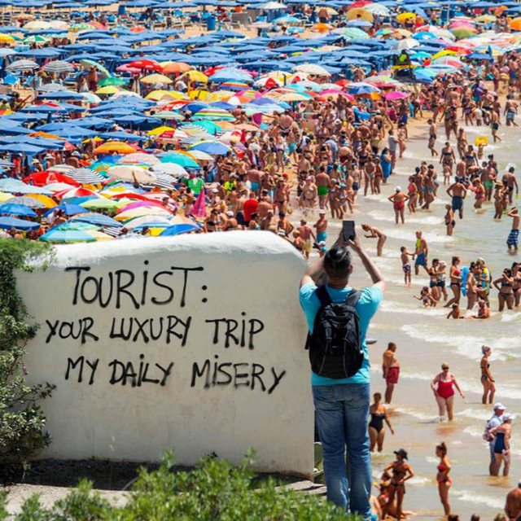

The Eclectic Polymath Podcast · Archive
#115 Travel Trends: How Destinations Become Famous, Crowded, and Reinvented

About this episode
The world’s hottest travel destinations usually aren’t accidents. They’re built through policy, media, infrastructure, incentives, and timing.
This episode looks at the systems behind global tourism and how places move from discovery to popularity, saturation, and sometimes reinvention. It gets into the Tourism Area Life Cycle, the impact of “set-jetting” from films and television, visa changes, tax incentives, and the role governments play in turning destinations into global draws.
We also get into the downside of success: overtourism, strained infrastructure, rising costs, and the pressure placed on local communities. From Aruba and Bali to Japan and beyond, this is a story about how destinations are manufactured, marketed, overwhelmed, and eventually forced to adapt.
Key points
- The world’s hottest travel destinations usually aren’t accidents.
- It gets into the Tourism Area Life Cycle, the impact of “set-jetting” from films and television, visa changes, tax incentives, and the role governments play in turning destinations into global draws.
- From Aruba and Bali to Japan and beyond, this is a story about how destinations are manufactured, marketed, overwhelmed, and eventually forced to adapt.
More like this
 #197 Spirit Halloween: The Business of the Pop-UpOctober 8, 202648:16
#197 Spirit Halloween: The Business of the Pop-UpOctober 8, 202648:16 #170 Hong Kong Under Japan: The Three Years and Eight Months That Changed the CitySeptember 21, 202659:25
#170 Hong Kong Under Japan: The Three Years and Eight Months That Changed the CitySeptember 21, 202659:25 #154 Salvador: Black Brazil, Colonial Power, and the Fractured CitySeptember 11, 202652:35#149 Dolly Parton: Dollywood, IP, and the Smoky Mountain StrategistAugust 26, 202635:11
#154 Salvador: Black Brazil, Colonial Power, and the Fractured CitySeptember 11, 202652:35#149 Dolly Parton: Dollywood, IP, and the Smoky Mountain StrategistAugust 26, 202635:11